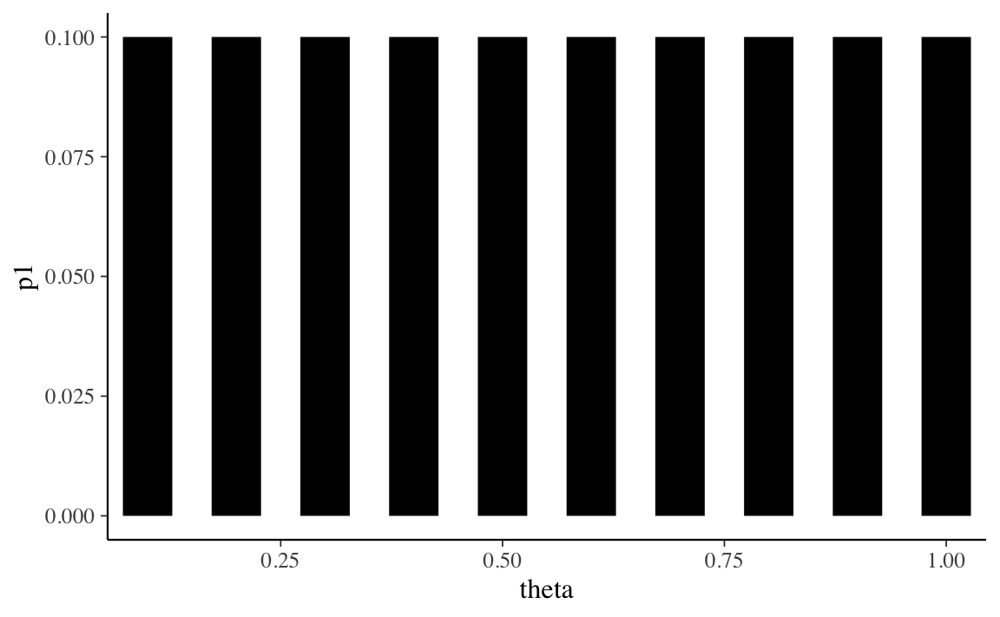

Capitolo 2 La divergenza di Kullback-Leibler
È comune in statistica utilizzare una distribuzione di probabilità \(q\) per approssimare un’altra distribuzione \(p\) – generalmente, questo viene fatto se \(p\) non è conosciuta o è troppo complessa. In questi casi possiamo chiederci quanta informazione venga perduta usando \(q\) al posto di \(p\), o equivalentemente, quanta incertezza aggiuntiva viene introdotta nell’analisi statistica. La quantificazione di questo incremento di incertezza è fornita dalla divergenza di Kullback-Leibler.
2.1 La perdita di informazione
Intuitivamente, per quantificare l’informazione che si perde quando una distribuzione approssimata \(q\) viene usata in luogo della distribuzione corretta \(p\) sembra necessaria una quantità che ha valore zero quando \(q = p\), e un valore positivo altrimenti. Seguendo la definizione (1.1) di entropia, possiamo quantificare una tale perdita di informazione mediante il valore atteso della differenza tra \(\log(p)\) e \(\log(q)\). Questa quantità è chiamata entropia relativa o divergenza di Kullback-Leibler:
\[\begin{equation} \mathbb{KL} (p \mid\mid q) = \E (\log p - \log q). \tag{2.1} \end{equation}\]
La divergenza \(\mathbb{KL} (p \mid\mid q)\) corrisponde alla differenza media nelle probabilità logaritmiche quando \(q\) viene usato per approssimare \(p\). Poiché gli eventi si manifestano secondo \(p\), è necessario calcolare il valore atteso rispetto a \(p\). Per distribuzioni discrete dunque abbiamo:
\[\begin{equation} \mathbb{KL} (p \mid\mid q) = \sum_i^n p_i (\log p_i - \log q_i) = \sum_i^n p_i \log \frac{p_i}{q_i}. \end{equation}\]
Riarrangiando i termini otteniamo:
\[\begin{equation} \mathbb{KL} (p \mid\mid q) = -\sum_i^n p_i (\log q_i - \log p_i), \end{equation}\]
ovvero,
\[\begin{equation} \mathbb{KL} (p \mid\mid q) = \underbrace{-\sum_i^n p_i \log q_i}_{h(p, q)} - \underbrace{\left(-\sum_i^n p_i \log p_i\right)}_{h(p)}, \end{equation}\]
laddove \(h(p)\) è l’entropia di \(p\) e \(h(p, q) = −\E [\log q]\) può essere intesa come l’entropia di \(q\), ma valutata secondo i valori di probabilità \(p\).
Riarrangiando l’equazione precedente otteniamo:
\[\begin{equation} h(p, q) = h(p) + \mathbb{KL} (p \mid\mid q), \end{equation}\]
il che mostra come la divergenza \(\mathbb{KL}\) possa essere interpretata come l’incremento di entropia, rispetto a \(h(p)\), quando \(q\) viene usata per rappresentare \(p\).
Esempio 2.1 (da McElreath 2020) Sia la distribuzione target \(p = \{0.3, 0.7\}\). Supponiamo che la distribuzione approssimata \(q\) possa assumere valori da \(q = \{0.01, 0.99\}\) a \(q = \{0.99, 0.01\}\). Calcoliamo la divergenza KL.
Le istruzioni \(\R\) sono le seguenti:
t <-
tibble(
p_1 = .3,
p_2 = .7,
q_1 = seq(from = .01, to = .99, by = .01)
) %>%
mutate(
q_2 = 1 - q_1
) %>%
mutate(
d_kl = (p_1 * log(p_1 / q_1)) + (p_2 * log(p_2 / q_2))
)
head(t)
#> # A tibble: 6 × 5
#> p_1 p_2 q_1 q_2 d_kl
#> <dbl> <dbl> <dbl> <dbl> <dbl>
#> 1 0.3 0.7 0.01 0.99 0.778
#> 2 0.3 0.7 0.02 0.98 0.577
#> 3 0.3 0.7 0.03 0.97 0.462
#> 4 0.3 0.7 0.04 0.96 0.383
#> 5 0.3 0.7 0.05 0.95 0.324
#> 6 0.3 0.7 0.06 0.94 0.276Nella figura seguente sull’asse delle ascisse sono rappresentati i valori \(q\) e sull’asse delle ordinante sono riportati i corrispondenti valori \(\mathbb{KL}\).
t %>%
ggplot(aes(x = q_1, y = d_kl)) +
geom_vline(xintercept = .3, linetype = 2) +
geom_line(size = 1) +
annotate(geom = "text", x = .4, y = 1.5, label = "q = p",
size = 3.5) +
labs(x = "q[1]",
y = "Divergenza di q da p")
Tanto meglio la distribuzione \(q\) approssima la distribuzione target tanto più piccolo è il valore di divergenza KL.
Esempio 2.2 Sia \(p\) una distribuzione binomiale di parametri \(\theta = 0.2\) e \(n = 5\)
n <- 4
p <- 0.2
true_py <- dbinom(0:n, n, 0.2)
true_py
#> [1] 0.4096 0.4096 0.1536 0.0256 0.0016Sia \(q_1\) una approssimazione a \(p\):
q1 <- c(0.46, 0.42, 0.10, 0.01, 0.01)
q1
#> [1] 0.46 0.42 0.10 0.01 0.01Sia \(q_2\) una distribuzione uniforme:
q2 <- rep(0.2, 5)
q2
#> [1] 0.2 0.2 0.2 0.2 0.2La divergenza KL di \(q_1\) da \(p\) è
sum(true_py * log(true_py / q1))
#> [1] 0.02925199La divergenza KL di \(q_2\) da \(p\) è:
sum(true_py * log(true_py / q2))
#> [1] 0.4863578È chiaro che perdiamo una quantità maggiore di informazioni se, per descrivere la distribuzione binomiale \(p\), usiamo la distribuzione uniforme \(q_2\) anziché \(q_1\).
2.2 La divergenza dipende dalla direzione
La divergenza KL non è una vera e propria metrica: per esempio, non è simmetrica. In generale, \(\mathbb{KL}(p \mid\mid q) \neq \mathbb{KL}(q \mid\mid p)\), ovvero la \(\mathbb{KL}\) da \(p\) a \(q\) è diversa dalla \(\mathbb{KL}\) da \(q\) a \(p\).
Esempio 2.3 Usando le seguenti istruzioni \(\R\) otteniamo:
tibble(direction = c("Da q a p", "Da p a q"),
p_1 = c(.01, .7),
q_1 = c(.7, .01)) %>%
mutate(p_2 = 1 - p_1,
q_2 = 1 - q_1) %>%
mutate(d_kl = (p_1 * log(p_1 / q_1)) + (p_2 * log(p_2 / q_2)))
#> # A tibble: 2 × 6
#> direction p_1 q_1 p_2 q_2 d_kl
#> <chr> <dbl> <dbl> <dbl> <dbl> <dbl>
#> 1 Da q a p 0.01 0.7 0.99 0.3 1.14
#> 2 Da p a q 0.7 0.01 0.3 0.99 2.622.3 Confronto tra modelli
La divergenza KL viene utilizzata nel confronto tra modelli, ovvero ci consente di quantificare l’informazione che viene perduta quando utilizziamo la distribuzione di probabilità ipotizzata da un modello, chiamiamola \(p_{\mathcal{M}}\), per approssimare la distribuzione di probabilità del vero modello generatore dei dati, \(p_t\).
Nel Capitolo ?? abbiamo introdotto il concetto di distribuzione predittiva a posteriori:
\[ p(\tilde{y} \mid y) = \int_\Theta p(\tilde{y} \mid \theta) p(\theta \mid y) \,\operatorname {d}\!\theta . \]
La distribuzione predittiva a posteriori descrive il tipo di dati che ci aspettiamo vengano prodotti dal modello generativo \(\mathcal{M}\), alla luce delle nostre credenze iniziali, \(p(\theta)\) e dei dati osservati \(y\). Quando valutiamo un modello ci chiediamo in che misura \(p_{\mathcal{M}}(\tilde{y} \mid y)\) approssimi \(p_t(\tilde{y})\). Cioè, ci chiediamo quanto siano simili i dati \(p_{\mathcal{M}}(\cdot)\) prodotti dal modello \(\mathcal{M}\) ai dati prodotti dal vero processo generatore dei dati \(p_t(\cdot)\).
Una misura della “somiglianza” tra la distribuzione \(q_{\mathcal{M}}\) ipotizzata dal modello \(\mathcal{M}\) e la distribuzione \(p_t\) del vero modello generatore dei dati è fornita dalla divergenza di Kullback-Leibler \(\mathbb{KL}(p_t \mid\mid q_{\mathcal{M}})\). Supponendo di avere \(k\) modelli della distribuzione a posteriori, \(\{q_{\mathcal{M}_1}, q_{\mathcal{M}_2}, \dots, q_{\mathcal{M}_k}\}\), e di conoscere il vero modello generatore dei dati, possiamo scrivere
\[\begin{align} \mathbb{KL} (p_t \mid\mid q_{\mathcal{M}_1}) &= \E (\log p_{\mathcal{M}_0}) - \E (\log q_{\mathcal{M}_1})\notag\\ \mathbb{KL} (p_t \mid\mid q_{\mathcal{M}_2}) &= \E (\log p_t) - \E (\log q_{\mathcal{M}_2})\notag\\ &\cdots\notag\\ \mathbb{KL} (p_t \mid\mid q_{\mathcal{M}_k}) &= \E (\log p_{\mathcal{M}_0}) - \E (\log q_{\mathcal{M}_k}). \tag{2.2} \end{align}\]
La (2.2) può sembrare un esercizio futile poiché nella vita reale non conosciamo il vero modello generatore dei dati. È però facile rendersi conto che, poiché \(p_t\) è la stessa per tutti i confronti, diventa possibile costruire un ordinamento dei modelli basato unicamente sul secondo termine della (2.2), ovvero senza nessun riferimento al vero modello generatore dei dati. Per un generico modello \(\mathcal{M}\), il secondo termine della (2.2) può essere scritto come:
\[\begin{equation} \E \log p_{\mathcal{M}}(y) = \int_{-\infty}^{+\infty}p_{t}(y)\log p_{\mathcal{M}}(y) \,\operatorname {d}\!y . \tag{2.3} \end{equation}\]
2.4 Expected log predictive density
Le previsioni del modello \(\mathcal{M}\) sui nuovi dati futuri sono date dalla distribuzione predittiva a posteriori. Possiamo dunque riscrivere la (2.3) come
\[\begin{equation} \elpd = \int_{\tilde{y}} p_{t}(\tilde{y}) \log p(\tilde{y} \mid y) \,\operatorname {d}\!\tilde{y}. \tag{2.4} \end{equation}\]
La (2.4) è chiamata expected log predictive density (\(\elpd\)) e fornisce la risposta al problema che ci eravamo posti: nel confronto tra modelli, come è possibile scegliere il modello più simile al vero meccanismo generatore dei dati? Possiamo pensare alla (2.4) dicendo che descrive la distribuzione predittiva a posteriori del modello ponderando la verosimiglianza dei possibili (sconosciuti) dati futuri (\(\tilde{y}\)) con la vera distribuzione \(p_t\). Di conseguenza, valori \(\elpd\) più grandi identificano il modello che risulta più simile al vero meccanismo generatore dei dati.
Non dobbiamo preoccuparci di trovare una formulazione analitica della distribuzione predittiva a posteriori \(p(\tilde{y} \mid y)\) perché, come abbiamo visto nel Capitolo ??, è possibile approssimare tale distribuzione mediante simulazione. Notiamo però che la (2.4) include un termine, \(p_t(\tilde{y})\), il quale descrive la distribuzione dei dati futuri \(\tilde{y}\) secondo il vero modello generatore dei dati. Il termine \(p_t\), ovviamente, è ignoto.4 Di conseguenza, la quantità \(\elpd\) non può mai essere calcolata in maniera esatta, ma può solo essere stimata. Il secondo problema di questo Capitolo è capire come la (2.4) possa essere stimata utilizzando un campione di osservazioni.
2.4.1 Log pointwise predictive density
Ingenuamente, potremmo pensare di stimare la (2.4) ipotizzando che la distribuzione del campione coincida con \(p_t\). Usare la distribuzione del campione come proxy del vero modello generatore dei dati (ovvero, ipotizzare che la distribuzione del campione rappresenti fedelmente \(p_t\)) comporta due conseguenze:
- non è necessario ponderare per \(p_t\), in quanto assumiamo che la distribuzione empirica del campione corrisponda a \(p_t\) (ciò significa assumere che i valori più comunemente osservati nel campione siano anche quelli più verosimili nella vera distribuzione \(p_t\));
- dato che il campione è finito, anziché eseguire un’operazione di integrazione possiamo semplicemente sommare la densità predittiva a posteriori delle osservazioni.
Questo conduce alla seguente equazione:5
\[\begin{equation} \frac{1}{n} \sum_{i=1}^n \log p(y_i^{rep} \mid y). \tag{2.5} \end{equation}\]
La quantità (2.5), senza il passaggio finale della divisione per il numero di osservazioni, è chiamata log pointwise predictive density (\(\lppd\))
\[\begin{equation} \lppd = \sum_{i=1}^n \log p(y_i^{rep} \mid y) \tag{2.6} \end{equation}\]
e corrisponde alla somma delle densità predittive logaritmiche delle \(n\) osservazioni. Valori più grandi della (2.6) sono da preferire perché indicano una maggiore accuratezza media. È anche comune vedere espressa la quantità precedente nei termini della devianza, ovvero alla \(\lppd\) moltiplicata per -2. In questo secondo caso sono da preferire valori piccoli.
È importante notare che \(\lppd\) fornisce una sovrastima della (2.4). Tale sovrastima è dovuta al fatto che, nel calcolo della (2.6), abbiamo usato \(p(y^{rep} \mid y)\) al posto di \(p(\tilde{y} \mid y)\): in altri termini, abbiamo considerato le osservazioni del campione come se fossero un nuovo campione di dati. In una serie di simulazioni, McElreath (2020) esamina il significato di questa sovrastima. Nelle simulazioni la devianza viene calcolata come funzione della complessità (ovvero, il numero di parametri) del modello. La simulazione mostra che \(\lppd\) aumenta al crescere del numero di parametri del modello. Ciò significa che \(\lppd\) mostra lo stesso limite del coefficiente di determinazione: aumenta all’aumentare della complessità del modello.
Esempio 2.4 Esaminiamo un esempio tratto da Bayesian Data Analysis for Cognitive Science nel quale la \(\elpd\) viene calcolata in forma esatta oppure mediante approssimazione. Supponiamo di disporre di un campione di \(n\) osservazioni. Supponiamo inoltre di conoscere il vero processo generativo dei dati (qualcosa che in pratica non è mai possibile), ovvero:
\[ p_t(y) = \Beta(1, 3). \] I dati sono
set.seed(75)
n <- 10000
y_data <- rbeta(n, 1, 3)
head(y_data)
#> [1] 0.55062422 0.13346270 0.80250987 0.21430898 0.01913430 0.08676517Supponiamo inoltre di avere adattato ai dati un modello bayesiano \(\mathcal{M}\) e di avere ottenuto la distribuzione a posteriori per i parametri del modello. Inoltre, supponiamo di avere derivato la forma analitica della distribuzione predittiva a posteriori per il modello:
\[ p(y^{rep} \mid y) \sim \Beta(2, 2). \]
Questa distribuzione ci dice quanto sono credibili i possibili dati futuri.
Conoscendo la vera distribuzione dei dati \(p_t(y)\) possiamo calcolare in forma esatta la quantità \(\elpd\), ovvero
\[ \elpd = \int_{y^{rep}}p_{t}(y^{rep})\log p(y^{rep} \mid y) \,\operatorname {d}\!y^{rep}. \]
Svolgiamo i calcoli in \(\R\) otteniamo:
# True distribution
p_t <- function(y) dbeta(y, 1, 3)
# Predictive distribution
p <- function(y) dbeta(y, 2, 2)
# Integration
integrand <- function(y) p_t(y) * log(p(y))
integrate(f = integrand, lower = 0, upper = 1)
#> -0.3749072 with absolute error < 6.8e-07Tuttavia, in pratica non conosciamo mai \(p_t(y)\). Quindi approssimiamo \(\elpd\) usando la (2.4):
\[ \frac{1}{n} \sum_{i=1}^n \log p(y_i \mid y). \]
Così facendo, e svolgendo i calcoli in \(\R\), otteniamo un valore diverso da quello trovato in precedenza:
1/n * sum(log(p(y_data)))
#> [1] -0.3639141Commenti e considerazioni finali
Dato che non conosciamo il vero meccanismo generatore dei dati \(p\), possiamo usare la distribuzione dei dati osservata come proxy per la vera distribuzione \(p\). Quindi, invece di ponderare la distribuzione predittiva in base alla densità reale di tutti i possibili dati futuri, utilizziamo semplicemente le \(n\) osservazioni che abbiamo. Possiamo farlo perché assumiamo che le nostre osservazioni costituiscano un campione dalla vera distribuzione dei dati: in base a questa ipotesi, nel campione ci aspettiamo di osservare più frequentemente quelle osservazioni che hanno una maggiore verosimiglianza nella vera distribuzione \(p\). È così possibile giungere ad una stima numerica della \(\elpd\) chiamata log pointwise predictive density (\(\lppd\)).
References
Se il modello sottostante i dati fosse noto non avremmo bisogno di cercare il modello migliore, perché \(p_t\) è il modello migliore.↩︎
In riferimento alla notazione, ricordiamo che Gelman, Hwang, and Vehtari (2014) distinguono tra \(y^{rep}\) e \(\tilde{y}\). I valori \(y^{rep}\) corrispondono ad un’altra possibile realizzazione del medesimo modello statistico che ha prodotto \(y\) mediante determinati valori dei parametri \(\theta\) (repliche sotto lo stesso modello statistico). I valori \(\tilde{y}\) corrispondono invece ad un campione empirico di dati osservato in qualche futura occasione.↩︎